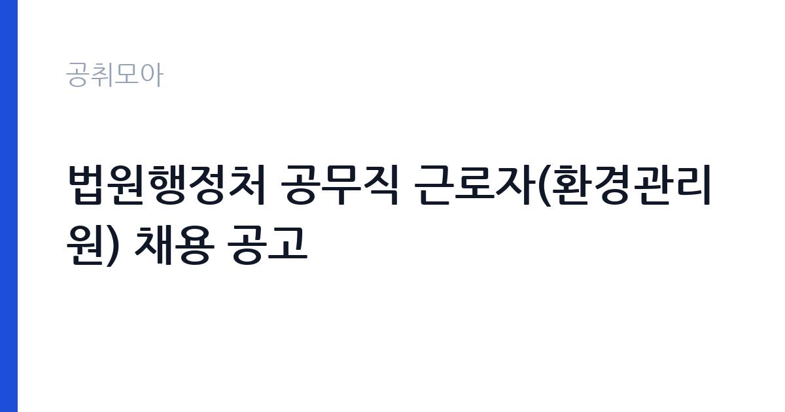

[국가기관] 법원행정처 공무직 근로자(환경관리원) 채용 공고
대법원 법원행정처 · 서울 · 마감 2026-11-06 (D-19) · 출처 나라일터

한눈에 보는 모집 조건
| 기관 | 대법원 법원행정처 |
|---|---|
| 공고명 | 법원행정처 공무직 근로자(환경관리원) 채용 공고 |
| 고용형태 | 공무직 |
| 근무지 | 서울 |
| 게시일 | 2026-10-19 |
| 마감일 | 2026-11-06 (D-19) |
지원자격, 이렇게 읽으세요
- 공무직 2명
- 접수 ~2026-11-06 마감
- 세부 조건은 원문 공고문 확인
환경관리원은 청사 미화와 환경 정비 업무를 담당하므로, 관련 업무 경험과 성실성이 평가의 중심입니다. 공고문에는 응시자격과 우대사항이 항목별로 제시되어 있으므로 원문을 확인해야 합니다. 공통 요건은 국가공무원법상 결격사유 부재, 공무직 근로자 관리규정상 채용 결격사유 부재, 임용 즉시 근무 가능입니다. 법원 청사는 보안과 신원 확인이 엄격한 공간이므로 신원조회 절차에 동의해야 하고, 관련 서류 제출에 협조할 수 있어야 합니다. 남성은 병역을 마쳤거나 면제되어야 합니다.
이 공고의 포인트
이 공고에서 눈여겨볼 부분은 접수 기간입니다. 11월 4일부터 6일까지 사흘만 열리고, 그 앞에 서류 준비 기간이 필요합니다. 반대로 생각하면 지원자 풀이 좁아 지원 전략을 세우기 좋습니다. 두 번째는 근무지입니다. 서초구는 대법원과 법원 관련 청사가 모여 있는 지역으로, 대중교통 접근성이 좋습니다. 세 번째는 인원입니다. 2명을 뽑기 때문에 한 명을 뽑는 공고보다 최종 합격 가능성이 상대적으로 높습니다. 공무직 특유의 고용 안정성까지 더하면 실무자에게 매력적인 조건입니다.
전형은 어떻게 진행되나
전형은 서류전형과 면접전형으로 진행되고, 최종 단계에서 신체검사와 결격사유 조회가 이어지는 구조입니다. 서류에서는 응시자격 충족과 업무 경험을 확인하고, 면접에서는 직무 이해도와 근무 태도, 조직 적응력을 평가합니다. 접수는 2026년 11월 4일부터 6일까지로 안내되어 있고, 제출 방법과 접수처는 공고문을 따라야 합니다. 제출서류에는 응시원서와 이력서, 자기소개서, 직무수행계획서, 개인정보 이용동의서가 포함됩니다. 서식은 첨부 파일을 그대로 사용해야 합니다.
원문에서 확인한 전형 방식
붙임 1.법원행정처 공무직근로자(환경관리원) 채용 공고문(배포용).hwp 붙임 2.법원행정처 공무직근로자(환경관리원) 응시원서 이력서 자기소개서 직무수행계획서 개인정보 이용동의서 등.hwp
이런 분께 추천해요
- 청사·빌딩 미화와 환경 관리 경험이 있는 지원자
- 서울 서초 인근에서 무기계약직으로 근무하려는 분
- 장기 근무를 전제로 안정적인 직장을 찾는 실무자
지원 전 체크리스트
- 접수 기간이 11월 4일부터 6일까지 사흘임을 인지했는가
- 응시원서·직무수행계획서 서식을 준비했는가
- 신원조회와 결격사유 조회에 동의할 수 있는가
- 근무지까지의 출퇴근 시간을 확인했는가
모집 일정과 제출 타이밍
접수는 2026년 11월 4일부터 6일까지입니다. 서류전형 발표와 면접 일정은 공고문 또는 개별 통보로 안내되고, 최종합격 후 임용일은 기관 일정에 따라 정해집니다. 접수 기간이 짧기 때문에 11월 초에 서류 준비를 시작하면 늦습니다. 10월 말부터 자격 서류와 경력증명서를 미리 발급받아 두는 편이 안전합니다. 일정은 기관 사정에 따라 변경될 수 있어 법원행정처 공고 페이지를 주기적으로 확인하는 것이 좋습니다.
직무 이해하기: 국가기관
환경관리원은 청사의 청결과 환경을 유지합니다. 사무실과 복도, 화장실, 회의실의 청소와 정리 업무를 맡고, 청소 용품과 장비를 관리합니다. 폐기물 분리배출과 재활용 관리도 포함됩니다. 법원 청사는 재판과 민원이 동시에 일어나는 공간이라, 이용객의 동선을 방해하지 않도록 작업 시간을 조정해야 합니다. 눈에 띄지 않는 일이지만 청사 운영의 기본을 떠받치는 직무이고, 근무 태도와 책임감이 평가의 핵심입니다.
자기소개서 작성 팁
자기소개서는 화려한 성과보다 성실성과 책임감을 보여주는 사례가 효과적입니다. 넓은 공간을 정해진 시간 안에 관리한 경험, 민원인의 불편을 먼저 살핀 경험 같은 구체적 장면을 쓰세요. 법원 청사라는 환경의 특수성, 즉 보안과 이용객 동선을 이해하고 있다는 점을 한두 문장 넣으면 직무 이해도가 드러납니다. 직무수행계획서에는 담당 구역을 어떻게 점검하고 기록할지, 청소 용품과 장비를 어떻게 관리할지를 구체적으로 적으세요. 장기 근무 의지를 분명히 밝히는 편이 좋습니다.
면접 준비 포인트
면접에서는 청사 환경 관리의 기본을 아는지 확인합니다. 청소 구역 배분, 오염도가 높은 구역의 처리 순서, 안전사고 예방 같은 실무 질문이 나올 수 있습니다. 이용객이 많은 시간대에 작업 일정을 어떻게 조정할지도 준비하세요. 공무직으로서 장기 근무 의지와 동료와의 협업 태도도 평가 대상입니다. 답변은 구체적 경험을 순서대로 설명하는 방식이 가장 안전하고, 모르는 부분은 확인 후 답하겠다고 밝히는 편이 낫습니다.
급여·근무조건 읽는 법
법원행정처 공무직의 보수는 기간제 및 공무직 근로자 관리규정과 기관 보수 기준에 따라 지급됩니다. 이 공고문에는 금액이 요약되어 있지 않으므로, 정확한 초임과 수당은 원문 공고문의 보수 항목으로 확인해야 합니다. 공무직은 기간의 정함이 없는 무기계약으로 정년이 정해져 있고, 4대보험과 퇴직급여, 각종 수당이 규정에 따라 적용됩니다. 초임은 경력 인정 범위와 직무 등급에 따라 달라지므로 채용 담당 부서에 문의해 확인하는 편이 정확합니다.
자주 묻는 질문
- 2명을 뽑는데 근무지가 같은가요
채용 인원은 2명이고 근무지역은 서울 서초구로 안내되어 있습니다. 세부 배치와 근무 부서는 공고문과 채용 담당 부서 안내를 확인하세요. - 경력이 없어도 지원할 수 있나요
응시자격과 우대사항이 공고문에 항목별로 제시되어 있습니다. 경력 요건 충족 여부는 원문 공고문에서 확인해야 합니다. - 접수는 어떻게 하나요
2026년 11월 4일부터 6일까지 접수하며, 제출 방법과 접수처는 공고문에 안내된 방식을 따라야 합니다.
함께 보면 좋은 공고
[국가기관] 「충남대학교 AI인재양성부트캠프사업단」 전담직원(팀원) 공개 채용 공고 — 마감 2026-10-25[국가기관] 충남대학교 브랜드 단과대학 사업 연구교수 공개채용 공고 — 마감 2026-10-26[국가기관] 충남대학교 브랜드 단과대학 사업 기간제계약직(행정원) 공개채용 공고 — 마감 2026-10-26출처: 나라일터 공개정보를 바탕으로 공취모아가 정리한 안내글입니다. 모집 조건·일정은 변경될 수 있으니 지원 전 반드시 원문 공고문을 확인하세요. 본 글은 정보 제공용이며 합격을 보장하지 않습니다.